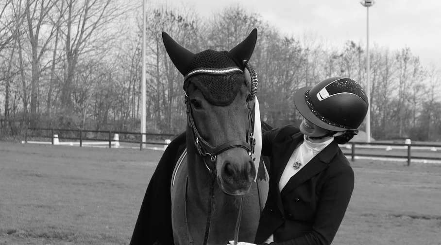
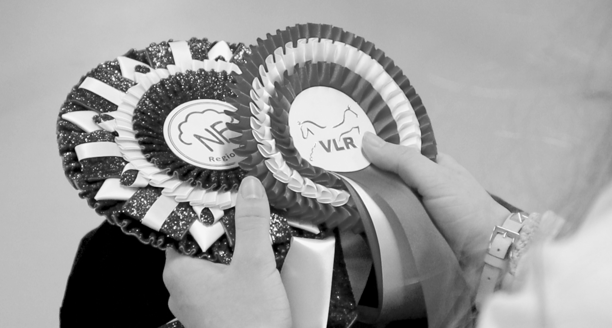
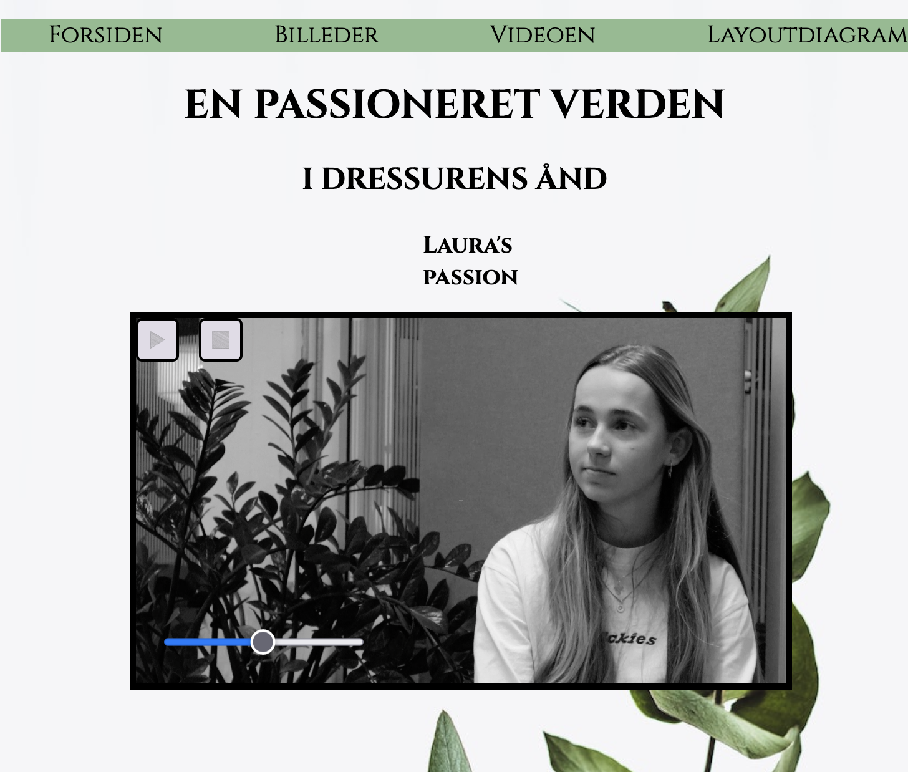

VIDEO OG LYDPRODUKTION
Planlægning inden videooptagelse
Interview
* Storyboard, 5-skudsregel, billede planlægning
Optagelsen
Pilotprojekt - Interview om passion for dressur
* Videooptagelser
Lydoptagelser
* Lydfiler
BILLEDER
 
Postproduktion
Pilotwebsite, Youtube, Github
* Website om Lauras passion
* Youtube
RESULTAT AF PILOTSITE
I samarbejde fik vi udarbejdet hver vores pilotvideo, og tilhørende pilotsite. Med denne pilotvideo, fik jeg derudover kendskab til Adobe Premiere Pro. Hvilket var helt ukendt for mig. Vi fik hermed afprøvet interview teknikker, og vi lærte at række ud efter bestemte mennesker til formålet. Derudover fik jeg breddere forståelse for lyd og lys til foto- og videooptagelse. Jeg fik værktøjer med i bagagen, som kan bruges til senere brug af video på et website.